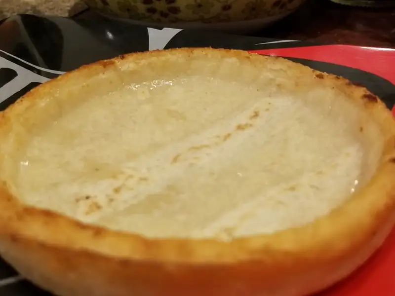
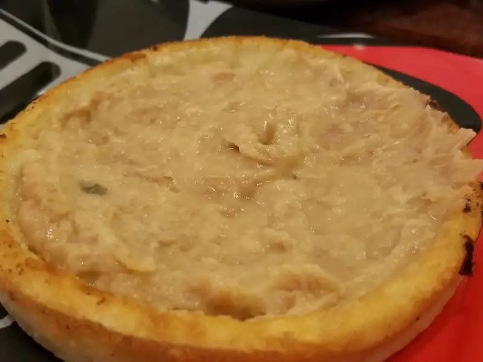
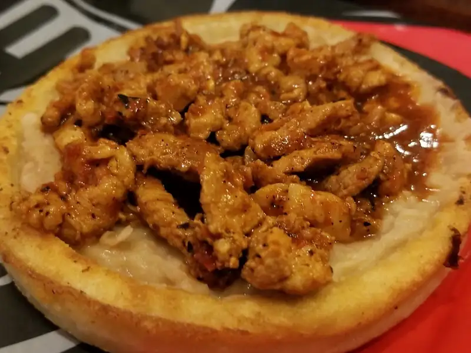
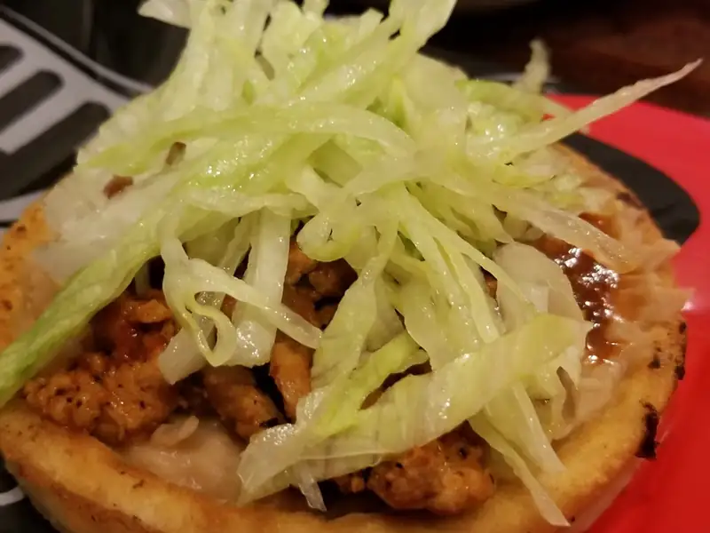

Como armar un sope en 8 pasos
Para la mayoría de los mexicanos un sope, pues.. es un sope qué mas quieres hacerle? Pero que tal si no sabes como se debe ensamblar un sope? Digo, es posible que estés viendo esta página y nunca te hayas tenido que hacer tu propio sope y la verdad, mi mas sincero pésame, es una terrible tragedia que trataremos de remediar:
- Paso 1 : El sope, comprado, obviamente :P, se fríe en aceite hasta que quede dorado y un poco crujiente en la superficie.

{kind=link}
- Paso 2 : los frijoles, del tipo que quieras, van machacados y un poco rebajados con agua para que queden untables, éstos formarán la base para el guiso que vayas a usar.

{kind=link}
- Paso 3 : el guiso, en este caso es un puerco con chile colorado, pero puede ser de cualquier guiso que se te antoje, solo basta con ver el menú de algún restaurante mexicano para ver que guisos se acostumbran.

{kind=link}
- Paso 4 : Lechuga, preferentemente de la de bola, rallada finamente.

{kind=link}
- Paso 5 : La crema, que deberá ser ácida o agria dependiendo de la consistencia que tenga la que consigas, puede ser que la tengas que rebajar un poco con agua; esto para evitar que pese demasiado y se lleve a la lechuga y lo demás cuando eventualmente se caiga al plato .
- Paso 6 : El aguacate, en láminas o rebanadas delgadas.
- Paso 7 : La salsa; las que se acostumbran son líquidas y no muy picantes pero si se te antoja con una tatemada, no te vamos a juzgar!
{kind=link}
- Paso 8 : (no hubo foto) El queso, puede ser fresco o si eres fancy del Cotija seco.
Cabe mencionar que se pueden omitir pasos, es decir, no tiene absolutamente nada de malo un sope de frijoles con cotija encima... a veces hay belleza en lo sencillo...